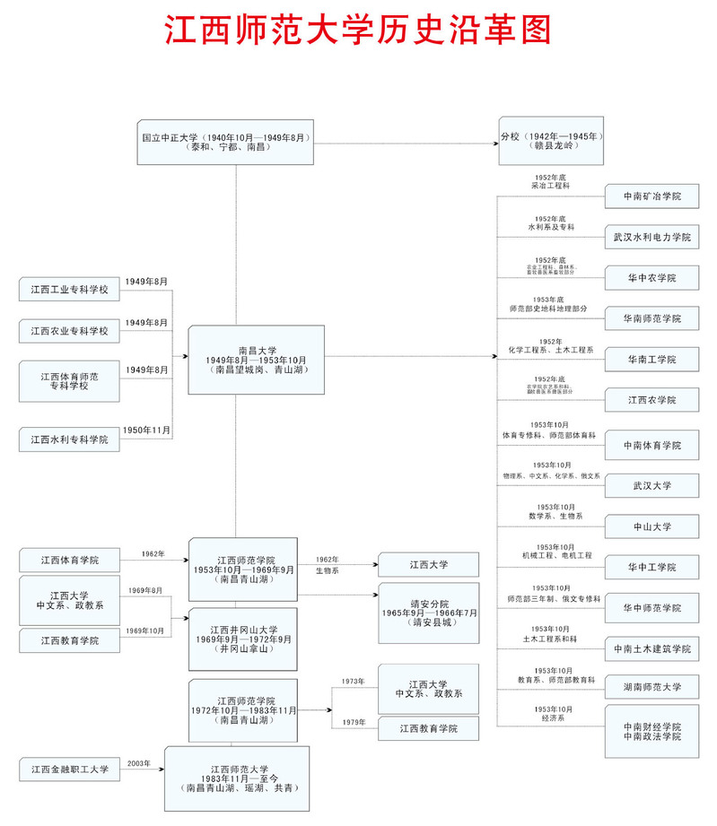

历史沿革
江西师范大学的前身是国立中正大学，创办于１９４０年，首任校长是我国著名植物分类学家、原中央研究院院士胡先骕博士。中正大学设文、法、理、工、农五个学院１８个系。
１９４９年９月，国立中正大学更名为南昌大学，设政治学院、文学艺术学院、理学院、工学院、农学院，１６个系。
１９５３年，全国高等院校进行院系调整，南昌大学各院系分别调出到中山大学、武汉大学、华中工学院、华南工学院等。以南昌大学师范部为基础，成立江西师范学院，设中语、历史、艺术、数学、物理、化学、生物７个专修课，后相继改系并增设了一些系。
１９６５年９月，成立江西师院靖安分院。
１９６９年元月，江西师院被撤销，以师院为主体，加上江西教育学院和江西大学的政教、中文、生物系，成立井冈山大学，校址设在井冈山拿山。
１９７２年９月，井冈山大学迁回南昌，恢复江西师范学院的校名。
１９８３年１１月，江西师范学院更名为江西师范大学。
２００３年３月３１日，江西省政府办公厅函复省教育厅，经省政府研究，同意将江西金融职工大学（江西银行学校）成建制并入江西师范大学。
２００２年１２月瑶湖校区举行奠基仪式，２００３年９月瑶湖校区第一届新生入学。
